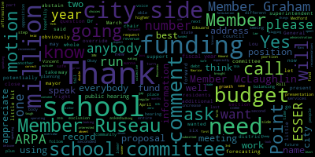
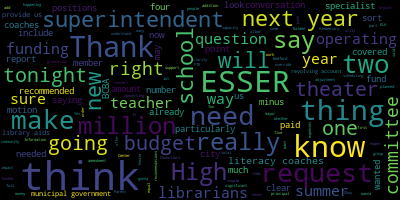

[Lungo-Koehn]: will be as follows. Pursuant to Mass General Law 71, Section 38N, the Medford School Committee will convene a public hearing for members of the community interested in speaking either for or against, in whole or in part, the superintendent's recommended fiscal year 24 operating budget. The school administration will present an overview of the recommendations brought forth to the Medford School Committee through meetings of the regular school committee held on March 6th, 2023, March 20th, 2023, as well as the Committee of the Whole meetings that took place on April 3rd, 2023, April 10th, 2023, and May 15th, 2023, in the formulation of the district's proposal of a budget request. That's submitted by Dr. Maurice-Edouard Vincent, our superintendent of schools. Welcome everybody. I'll turn it over to you and two questions after that. Roll call, please. present, seven present, zero absent. I'll turn it over to Dr. Edouard-Vincent.
[Edouard-Vincent]: Dr. Cushing, are you able to start the deck? Thank you. So good evening. This evening, I'm going to present a very short slide deck just to provide the budget update. And so, this just shows the budget process and tentative timeline. Today we are at June 5. Thank you, Dr. Cushing. This evening's budget objectives, it's going to be the public, the official public budget hearing which we are statutorily required to do and listen to the public for any feedback and comments on the budget that will be presented. So our last meeting in May, on the 15th, the budget recommendation that I presented to the committee was $71,835,165. This number came after a comprehensive budget review. So this particular slide shows some of the recommended investments that the district made. We were tasked with looking at the budget and presenting a level budget of $71 million. And so these recommended investments These were the key investments that totaled 480,000. The implementation of the Medford High School climate recommendations was a budget neutral recommendation, so there was no adjustment necessary. We recommended the addition of two literacy coaches, a second PIC specialist, conversion of library aids to librarians, and 1.0 theater arts teacher. Our proposed ESSER balance at the last budget presentation was approximately $525,000 in a proposed balance that would remain with our ESSER funding. So in order to achieve the 71 million, we needed to look at the $835,000 differential. So on the previous slide where I showed the recommended investments, they totaled $480,000, which left us with a balance of $355,000, which will be covered by sir. Next slide please. Subtracting the 355,000, the 480 from the original 525,000 left us with 170,000. The literacy coaches. I put it in green, because we know that it's critically important for the implementation of the new literacy program. So we subtracted the 160,000 from that funding with so leaving us with a balance of 10,000 on so at this point in time. which brings us to the 71 million allocated amount. And I am prepared to take any questions from the committee or the community.
[Lungo-Koehn]: Thank you, Dr. Edward-Vinson. Is there other questions from the committee?
[yB-9Wmg_zjs_SPEAKER_01]: Member Hays. Thank you. I just wanted to ask so the, the literacy, the two literacy coaches are being funded by Esther, or is it two additional that we can have the two literacy coaches there are two literacy coaches that we are recommending.
[Edouard-Vincent]: for the implementation of the new program. And we landed on the two coaches. It's going to be a new program at the elementary level, and we would like to have one coach share two buildings so that the two literacy coaches would be between the four elementary schools. And although we had the recommended investments, we went back and subtracted those two coaches and added them back in under ESSER, which left us with the ESSER balance of $10,000. So there are two coaches included in the recommendation of the $71 million balance.
[yB-9Wmg_zjs_SPEAKER_01]: Okay, I know that I'm kind of a broken record on this, but I wanna say again, that I feel very strongly that we need one at each building And I was hoping at today's meeting, maybe we'd be coming forward with some suggestions of ways to find the money for that. I think that, you know, as I've emailed a couple of times, we've had coaches or interventionists as a priority in the budget for at least the last two years prior to this year. And each time they've been cut out. And this year with the new implementation of the new program, I, you know, again, I just want to keep reiterating I think one each building is really necessary to get this program up and running the first time we've had a new program now and at least 10 years. So I was really hoping we'd be talking about whether there was a way to find some money just for this first year really to get the implementation going.
[_OvxNEIZPH8_SPEAKER_16]: Mayor.
[Lungo-Koehn]: Member Ruseau.
[_OvxNEIZPH8_SPEAKER_16]: Thank you and thank you to member Hays. This presentation is for our submission of 71.8 million. That's a question. Or the 71 million that the mayor has said she would give us.
[Edouard-Vincent]: This presentation was just demonstrating how we would arrive at the 71 million.
[_OvxNEIZPH8_SPEAKER_16]: So we're not, we're not putting forward our recommendation. I mean, because in past years we would put forward a recommendation for what we needed the mayor. After we did that the mayor would tell us what we get, or before, and then we come back again and try to figure out how to get the number down, but we are never going to vote for the 71.8 million in the current plan or agendas that we have scheduled.
[Edouard-Vincent]: I believe the committee is going to give their recommendation I just was tasked with demonstrating how we would arrive at 71 million that that's all the slide deck represents.
[_OvxNEIZPH8_SPEAKER_16]: I have another question about this. How many literacy coaches did the literacy program say we should have.
[Edouard-Vincent]: I'm from my member, this Lucy did have just a conflicting appointment. But from the time when we originally started planning it had been to have two coaches in collaboration or in conjunction with the work that was happening with health for literacy where they would be providing additional professional development and additional support. to the schools. So, I know ideally the, the, the. You know, the more support that you're able to provide one coach per building was one of the proposed recommendations but we were prepared to implement the new program with two coaches and working with health literacy where they would be sending their experts to also come in and support the instruction at the schools.
[_OvxNEIZPH8_SPEAKER_16]: Thank you. And one last question before I stop taking all the question time. The slide we saw said 71.8 million. Did we see a slide that said the other number?
[Edouard-Vincent]: 71 million? Yeah. That was the last slide.
[_OvxNEIZPH8_SPEAKER_16]: Okay, sorry. I don't have the slides myself, so I couldn't return to them. I have plenty more questions, but I'll let other members ask.
[Lungo-Koehn]: And thank you, members. So if I may, from the chair, just because this first presentation for myself too, it's 71 plus the 525,000, or 515,000. Is that correct? Yes.
[Jim Lister]: Point of information.
[Lungo-Koehn]: Yes.
[_OvxNEIZPH8_SPEAKER_16]: So I just wanted to be clear on that just make sure I was clear, but member so that that is a not a factual statement our budget includes lots of other monies that we are not voting on. The word budget refers to the allocation request from the city, only that we do not include our special ed funding we get the year later we do not include transportation assistance, and just like those other grants for title one we do not include answer. So our budget is not for 71 plus something. It is whatever number will appear in the city budget, and it will definitely not include. I believe our actual according to DC our budget, our total spending is $84 million a year. when you add all those other things in. So I think it's not accurate to say that our budget will be anything bigger than the 71, because my understanding of the word budget in this context legally does not include any grants of any sort.
[Lungo-Koehn]: Thank you, member Rousseau. Member Graham.
[Graham]: Thank you. So I think there's two things happening, right? We have to, as a committee, coalesce around request to the municipal government. So, that's one thing that's happening but I think separately, we also asked the superintendent for some clarity around what would it look like if we had to get to $71 million. So, on item number two, I have a couple of questions. So, the our the budget you recommended was 71 835 165. two ELA coaches, a specialist in the Parent Information Center, converting the library aids to librarians, and one FTE for theater at the high school. So within the 71.8 and change, there was $480,000 that represents new things that we will do next year, which is in addition to other new things we're gonna do next year that are outside of the operating budget because they're gonna be funded by ESSER. And we've talked about that in prior presentations. So, I think my question is, I am a little confused, but when you say total deductions based on FY24 recommendations, the slide said 835,000, which is basically like the discrepancy between what you recommended and the $71 million that the mayor's previously indicated, right? But then minus 480, which is essentially the new things that we're going to do under the budget. And it says $355,000 to be covered by ESSER. So 835 minus 480, 355. I think my question is like, are we, so we're assuming then that we, of the $525,000 left in ESSER, that we can identify $355,000 in operating expenses that could be paid for by sir is that true. Yes.
[Edouard-Vincent]: Yes, so for that 355,000, we were looking at five FTS that were on the budget five open positions at approximately 70,000 per FTE. So that was where we were transferring those five additional positions to go on to ESSER. And that was where, so the 355,000, when you subtracted that from 525, You had $170,000. Then from the $170,000 balance, tentative balance, we also went back in and added the two ELA coaches. which were 160,000. So that left us with a balance of 10,000 left on ESSER for FY 25. So we almost zeroed ESSER out.
[Graham]: Got it. And what are the five FTEs that are moving out of the operating budget and into ESSER?
[Edouard-Vincent]: So we have like, these are all open positions. So like a BCBA, we have an adjustment Councilor, I wanna say at the McGlynn Elementary School. We have a few teaching positions, world language position. So there were like three positions at the high school. One was a district-wide BCBA, an adjustment Councilor at an elementary school, and then three, three teaching positions at the high school.
[Graham]: And are those positions permissible under ESSER rules to be covered by ESSER?
[Edouard-Vincent]: Yes, they would be able to be covered by ESSER.
[Graham]: And is that because we perceive that they are one year expenditures? Or that they are needed because of the pandemic? I know that we're already paying for BCBAs and adjustment Councilors on ESSER, so we're saying we're adding more BCBAs and adjustment Councilors to ESSER. But the language teachers sort of surprised me because I don't, I'm not sure if they are needed positions in a continuous way, how do they apply to ESSER? Or how do they qualify, I guess is my question.
[Edouard-Vincent]: I would say students who, for ESSER, if we're able to demonstrate that it's addressing cell, social-emotional learning needs, bringing joy or support to students, you are able to demonstrate that. But what we did though was look at open positions and not filled positions. So those, there were five, And it just kind of worked out with the math. That's how we got to that number.
[Graham]: So then what we're saying is, out of the 525,000, 355 can be used to pay for these five positions. So that's 355 out of the 835. that can be covered by ESSER and that leaves $170,000 which also allows us to cover two coaches, two ELA coaches. So that's 160. But if you take the 480 of the new minus 160, there's still $320,000 of recommended investments listed here. And I think that So for it and that would include the PIC specialist converting the library aids and the theater teacher. So that's where $320,000 comes from. So I think what I am not clear on is how is the $320,000 going to be paid for if you're saying that's how we would get to 71? Because I think there's still $320,000 unpaid. So is it really 71 or is it 71, 320 that we have gotten to?
[Edouard-Vincent]: we were cutting and seeing if there were just creative ways to.
[Graham]: So meaning we would not do those things.
[Edouard-Vincent]: Correct.
[Graham]: We would not get a theater teacher, we would not get a pick specialist, and we would not convert our life library aids to librarians. That is how you would get to 7100 71 million.
[Edouard-Vincent]: Is that right, that is correct.
[Graham]: Okay. Okay, thank you. I think I'm with you now. So, I think, you know, in terms of the two things that we have to do tonight. Certainly talking about what our request municipal government is going to be as a committee, I think, is really important, but I also think. You know, considering with clarity that that the way that we would get to $71 million would mean. creating a scheduling issue at the elementary school level, because my understanding was that library block changing was a requirement to make the scheduling work next year at the elementary school, that we would have to find some other way to offer theater programming next year or not offer it at all, and that the pick would continue to be understaffed. So I think when we get to the part and I for me, I think I would like to talk about one and then the other if we could when we get to deliberation after we hear from the community but those are those are significant trade-offs and those are significant things we would not be able to do in order to get to that $71 million and II know you know that but I'm just trying to make sure I we're all clear on what getting to $71 million looks like and also to say using ESSER money and now we're going to go up to 33 people so we have 33 staff members being paid for by grant funding that will not be there next year and that is a that is a huge number so we need to be mindful of the impact and we may not have a choice this year but the impact of that is just kicking the can down the road and I think my committee members know, my fellow colleagues know that I hate doing that because I think it just sets up problems that are bigger than just, you know, delaying one year. So I just want to thank you for that. I wanted to make sure I was clear about what everything said as it stepped out. And I look forward to hearing from the community. Thank you.
[Lungo-Koehn]: Member Ruseau?
[_OvxNEIZPH8_SPEAKER_16]: Thank you. I'm still confused by the exact wording. It says that we're going to implement the recommendations from Mr. Welch and that it's budget neutral. And I'm looking at the recommendations right now, including a 0.5 FTE Dean position, the addition of an associate principal, the addition of four permanent substitute teachers. So these would be, you know, full-time teachers. Nobody can find a substitute, I get that. But an actual teacher just in the teacher roles on the actual schedule as a teacher is a different, different thing to try to recruit for than a substitute. So, all of those add up to an awful lot of money. And I'm not sure how we can say that's budget neutral unless we're just not doing the recommendations from Mr. Welch for which we spent a good amount of money to get.
[Edouard-Vincent]: Yes, so currently right now in the budget, we were allocated the high school had three ISS is or building based substitutes that were allocated for and under. The proposed structure from Mr. Welch. It was a principal associate principal and three assistant principal roles. Currently we have a principal. We have four assistant principals that work within the high school. And we also have Principal Fallon on the vocational side. So when we were saying it was budget neutral, even though there was a recommendation of an associate principal, it was still four adults, four additional principals, associate or assistant principals, supporting the structure. So it was still the same total number of people, just One was given a different title. So the title of associate principal doesn't currently exist within the structure that we have. We have principles and then we have assistant principals. As it stands right now where when we said it was budget neutral we're still maintaining the same number of supporting adult supportive adults. So that was where the budget neutral language was recommended. And for the dean position. We are. As we've been looking at the structure that we currently have in the supports that we were giving to schools and getting feedback from principals in terms of how we have been using some of our existing positions such as engagement specialists, the Dean position, we were creatively looking at Expanding either the job description and working with our engagement specialists that also work with the schools. We do have an engagement specialist down at the. middle school levels and those administrators in meeting and working with them, we said that we're going to look at reallocation and they were in full support of that. That when they need additional support, they would request the additional support based on the structures at the existing schools. So that was why when you saw budget neutral or cost neutral for the high school, we felt that we could, we could get there, we could get fairly close to the recommended proposal but in terms of the amount of administrators, we would not be reducing the total number of administrators assigned to the high school.
[_OvxNEIZPH8_SPEAKER_16]: Thank you. And I also want to just share my concerns about. We are in, we are purposefully increasing our fiscal cliff, one year before the cliff at the beginning of the pandemic. It was a lot of like the federal government just seemed to have a blank check. And so it was years away when we were going to be in full blown walking off the cliff. We are well we're 12 months away from walking off the cliff, and we're going to make it a higher cliff. I'm not saying we shouldn't add those other five, and that we shouldn't use our extra funds for that purpose. I'm saying those should be in our operating budget to additional literacy coaches should be in our operating budget. And frankly, an awful lot of other people that currently work for us that are in most of the districts operating budget employees. that we're just pretending aren't going to somehow ever have to become part of our operating budget. We're just closing our eyes and being like, well, next July is going to be terrible. You know, you know something as bad as coming. doing nothing about it is different than when something bad happens at the beginning of the pandemic. Nobody was prepared. And how well, maybe we could have some of there could have been some preparations but here we are 12 full months, and we're going to approve a budget, adding to the fiscal cliff, up to 33 and a half people who will either be laid off or some magical thing will somehow make 33 people That's not $100,000. That's not a million dollars. I don't know what it is, but it's a lot of money. And our normal annual increases are going to come anyways. The teacher's contract is for 3%, I believe, in the next year. We have other contracts that are going to increase. And that is all in addition to the 33 and a half people. That we are all going to sit around this table and say we don't want to get rid of because they're all important. So, there are solutions. The solutions all expire on December 31 and override before then would allow the mayor to start including that money in our budget next July 1. When December 31 arrives, those people had better be looking for new employment. And I don't I mean. It's really insane. So I just, I just find it fascinating that there's a massive free cash in City Hall. And we're going to not even fund the meager improvements to the district we want to as a committee. And we're just gonna like sail along at full speed right off the edge of that cliff, as if there are not, aside from the employees that are impacted. There are no employees working in our school district who are not impacting our kids. So, you know, all I care very much about the employees, we really get elected for the kids, and all of the needs being met by those employees are just going to stop being met because there's no creative way to take 33 and a half people's full-time employment and just shove it onto other people and think that the work will get done. We've sort of been doing that in Medford for a very long time. So I'm deeply disappointed in 71 million, 71.8 million would not be satisfying. It would be, in my mind, a minimum to not making the problem worse next year. Thank you.
[Lungo-Koehn]: Thank you, Member Ruseau. If I may, from the chair. I just want to point out a few things from your comments, because I do think we are planning as best we can on the city side, especially because the school's ESSER funding runs out at least six months prior to ARPA funding. We are plugging the entire gap with the ESSER funds because they need to be spent. They can only have the summer of 2024. and then they will run out. So we do know that we're using about 3 million of outside funding through ESSER for the entire budget, schools, city side. I'm talking about it as a collective whole. That's why on the city side, we've made very tough choices and we are not using any ARPA funding for revenue loss. There are, like you said, positions that are being funded through ARPA. We're making sure we don't use, we're not doing more spending other than that on the ARPA side, because this year we did have new growth of 500,000. I expect that to hopefully double next year, but you're right. We wanna keep these positions. We're forecasting, we're looking at the numbers, we are trying to collectively take a look at potentially funding a brand new high school with a $200 million debt exclusion ask of our residents There's a call for street improvement, and there's a call for, obviously, more general fund revenue. I knew we were in this position. That's why when the council proposed an override in August, I agreed that I would approve, I would campaign for, and I would support a $3 million override, which is what you're seeing now. It is going to be needed into the future, potentially, maybe a little less, obviously, hopefully with new growth. So I think we're all on the same boat and understanding that there is additional monies that are going to need to be raised one way or another to support 33 people and about five to 10 to 10 people on the city side, but we do have plans for that we are forecasting I do see potentially an override in, in the future, whether that's November or March. the ARPA funding does not run out until December 31st, 2024, so it's a little bit different, but we all, including on the city side, wanna do the best we can with contracts, but with that comes the need for more money, and we have been planning accordingly, and I think it can seem dire, but considering that we're doing the forecasting, you have a school committee, a city council, and a mayor that are ready, willing, and able find the funding one way or another or ask our residents for it. It's just something we cannot depend on. That's why I think a lot of survey work needs to be done in the fall. What will our residents support so that we can move that forward on a ballot? So we're doing the hard work and the schools are using the ESSER funding because it runs out and the city side has some for fiscal year 25, but for the second part of fiscal year 25 and fiscal year 26, we will need additional funding if we want to maintain increasing City services and school services. So that's just a little tidbit but I member Hays I know you wanted to comment.
[yB-9Wmg_zjs_SPEAKER_01]: Just one question, how many adjustment Councilors are currently funded by Esther.
[_OvxNEIZPH8_SPEAKER_16]: I'll get that in a minute.
[Lungo-Koehn]: Okay, thank you.
[_OvxNEIZPH8_SPEAKER_16]: I just, I was surprised to hear you use a number to describe the high school considering construction costs have gone up that again I'm sorry, I was surprised to hear you use the number 200 million for high school I don't think that there's a high school that could be built anywhere for 200 million anymore.
[Lungo-Koehn]: If we get the MSBA loan, we'll find out in the fall, we would have to ask for $200 million debt exclusion.
[_OvxNEIZPH8_SPEAKER_16]: Great, thank you. I thought you said a $200 million high school, and I was like, ooh, that would be something.
[Lungo-Koehn]: We'll go to $350 million, but I'm going to go with $400 million, just to be safe. All right.
[_OvxNEIZPH8_SPEAKER_16]: Thank you. I appreciate your comments on the funding. I do also want to point out that aside from the 33 and a half people, we have most of our paraprofessionals and revolving accounts, which is totally, perhaps not even allowed. When I talked to the, the president of the Massachusetts school school. No, the, the, the accounting, the school business operations at Maslow, I forget what their dental stands for. operating budget employees out of revolving accounts was palpable. And I'm a chair of the Shore Educational Collaborative as the Medford representative. And it's a wonderful meeting because every month I get to sit down with school committee members who I have a relationship with at this point. And I can ask them very pointed questions about things that we do and say, hey, do you do that? And universally, nobody does what we do here, we have so many employees that are not on our operating budget. And so when we look at, you know, the number on the DC website, well that that none of those employees are included in how much we spend on our schools. So in reality we spend more on our schools than we are reporting that we do, which I suppose is I guess that's a good thing, but it is a totally not transparent way of paying for people to work for us. And it is also a highly risky thing when the pandemic hit and we shut down after school, we were all like, how are we gonna keep paying these people that are actually not in our operating budget because the money stopped flowing. So I think that it's good to hear that the city is planning I don't know exactly the timelines of when an override would allow us to spend that money, but if it was in March, I would hope we would already have our budget halfway done or more by March, and whether or not we're cutting people or. The residents have been giving the democratic option to decide to fund their schools should have already happened before March, because it's, it's, I mean the superintendent can't be, you know, as happened in 2020, you know, was given a weekend to cut $400,000 school committee had no input, because we couldn't have a meeting. And I just think it's not fair to the superintendent to ask her to plan for something. and then not tell her what that thing is. So sooner is better, and maybe just some more transparency about. What are like if you're if the mayor is saying that we in fact are going to be able to find all these positions for July one, I would throw a party, I'd be very happy. And I frankly wouldn't even ask how, because if the mayor has enough free cash, and she says she's going to do it. Well, then, how are you, because we do not fund the public schools the school committee does not. So, just like with the number that we've been given. Whatever it is, is what we get. So I just, I guess I don't have a lot of confidence that next March and April, we are not just sitting around figuring out what departments to slash. Because some of those people, there's now 33 and a half people, we will all agree cannot be cut. And if we can't cut some of them, we cut other people. And I don't know where else to cut. Thank you.
[jIaWTlmnQkA_SPEAKER_03]: Member McLaughlin. I think the podium blocks me, frankly, the way the position that it's in I'm not sure if you can see I know I often can't see the superintendent with the podium, but thank you. I've been waiting a little bit, a little while. which is why I think maybe you can't see me but I wanted to ask as well so there's a few things when I first came on to the school committee, the budget process was very different than it is now and I know that we had a director of finance in the interim, that sort of change things and some of the recommendations on recommendations from this committee. In the past, just so for folks who are listening or in the audience or watching online, in the past, what would happen is department heads would come before the committee, would sort of describe what happened in their, what happens in their department, would break down what their department did and what they were proposing was needed in the future. And that process was sort of eliminated in this last iteration. And it became more of a sort of global look at it at a larger number. I frankly liked the transparency that occurred when department heads were able to come up and we were able to ask them about what was needed and how we were able to get to certain numbers. I know that the process was longer as a result of that, but personally, I preferred that. I felt like it was more, for me, it helped me better understand the budget and where money was coming and going. And we were also able to really understand what each school had. So how many adjustment Councilors were at X school, how many, you know, BCBAs, we're at Wise School, we were able to sort of see equity across the district or inequity across the district and how it might be able to be addressed. And in this iteration, I'm not finding that as much. So I just want to mention that to my colleagues here and to the audience as well, because I think that we always have the opportunity to change the process. And I think the more transparent and simplified the process can be, as much as one can do with a, you know, $70-$80 million budget, the better it is. I have worked on multi-million dollar budgets in my professional life, and it has been a much different process and one much more similar to what we had seen earlier with sort of department by department, subtotal by subtotal. which for me was particularly helpful. Another real concern I have about this budget is we're talking SEL, we're talking post-pandemic relief, we're talking ARPA and ESSER. And, you know, I haven't really heard a lot of discussion about our underrepresented subgroups and the increased need of our underrepresented subgroups, particularly we know we have a mental health crisis happening right now, how we're just how we're, you know, thinking about that for our student population, how we're thinking about we just recently to my relief passed a resolution, ensuring non discrimination and inclusion and non exclusion from all activities that are school based before school, during school and after school, and yet I continue to hear from families, and I am concerned about particularly summer programming. And what we're doing around summer programming, for example, the summer fun camp, which has historically been, you know, one or two general education teachers and a lot of high school students. More recently, through a lot of work from community members, we were able to get increased services provided there for some students with higher needs, students with disabilities, other students. so that they could access that program. That doesn't seem clear to me as to whether that's happening this summer, or whether that's happening with any of our summer programming or enrichment programming or after school programming, or any of our programming and I don't know, a lot of times when we asked that question we're told this step that people aren't available, that it's hard difficult to hire folks but if we don't even have them. allocated in a budget, or if we're not talking about how they are allocated in the budget, if they are, whether it's through additional special education funding for grants that, again, we don't see on this particular budget sheet, which can be substantive in their money, the IDEA funds, other funds, not knowing where that money is going is really tricky for me, and understanding how that gets teased out is really tricky for me. And also, I think we talked in the last meeting or the meeting prior, specifically about the revolving accounts and what kind of income they generate. So for example, if the, and this is just an example, I don't have these numbers for real, but if, for example, the summer fund program, which is a summer camp for students in the Medford community that is housed in one of our schools, if for example that, and it's tuition driven, If, for example, that program made a profit of say, I don't know $40,000 I don't know that it does but say for example it made a profit of $40,000 yet was unable to accommodate individuals who had additional needs for any number of reasons because budget money wasn't allocated because what have you. That's not meeting the requirement of reasonable accommodations, for example, and how are we really considering that, particularly when we're talking about SEL for those who folks who don't understand the acronym I would just share it social emotional learning and the importance of belonging, being part of one's community and feeling that and also recruitment of skills so that you start in September. with the same skills that you had and regression, preventing regression of skills so that you don't go backwards over the summer, particularly for our more marginalized subgroups. So I just feel like that conversation is being lost here. So in summary, I have two comments overall. One is I think we're losing a bit of the conversation. 33 staff that we have to consider is very dire. And also these other pieces that I feel like aren't being discussed are very dire. And then secondly, the process and the transparency around the process. This has been far more vague for me than in previous processes. And this is not a reflection of the superintendent by any means, you know, we had, you know, different directors of finance over the past term and things have changed. So, and hopefully we'll be hiring another director of finance soon. So I think we really need to hear from the community as well about what the process can look like and how it can be more transparent and whether in fact people are understanding some of the language that we're even talking about or whether they're looking at these sheets and know how it translates into schools or anything, because I'm not entirely convinced that they do. So thank you for hearing me out.
[Lungo-Koehn]: Thank you, Member McLaughlin.
[_OvxNEIZPH8_SPEAKER_16]: Mayor, just one quick.
[Lungo-Koehn]: Member Ruseau.
[_OvxNEIZPH8_SPEAKER_16]: Thank you. I'm assuming we're going to go to the audience in a moment, but I just wanted to ask that folks clearly state their name so I can put them into the minutes that I'm taking.
[Lungo-Koehn]: Name and address for the record. two minutes or so, because I know we have enough, we have two more meetings. Would anybody like to speak or?
[_OvxNEIZPH8_SPEAKER_16]: Mayor? Yes. I think we have to do the, I don't know if it's the against and the for's or the for's and the against, like I- For public hearing? Yeah.
[Lungo-Koehn]: Can we do that after public hearing?
[_OvxNEIZPH8_SPEAKER_16]: No, no, I'm talking about the audience.
[Lungo-Koehn]: General comments can be stated after we do the for and against. So you can just let the process follow through. If you're not for or against it, just let me run through that, and then we'll take full comments. The superintendent's budget proposal with 71 million as a number, plus using the 512 15,000 additional for ESSER.
[jIaWTlmnQkA_SPEAKER_03]: But point of information. information you asked is through the chair is member Ruseau asking that we do that before we hear from the public because I would, I prefer to do it.
[_OvxNEIZPH8_SPEAKER_16]: We always do is that we say is, is there a reason that we always mean I mean I just watched a city council meeting where the people who want to speak in the affirmative for something, come up they said they get to speak, and then the people who want to speak against it. After that, that part is closed. And then the people that want to speak against it come up and speak and I'm looking at the law right now that does say that we're getting those for and against it doesn't say that they have to be everybody for goes together. I just think it's cleaner. But I don't care. People say whether they're for or against the $71 million recommendation so I can keep that in the notes.
[jIaWTlmnQkA_SPEAKER_03]: Again, point of information there.
[Lungo-Koehn]: Point of information, Member McLaughlin.
[jIaWTlmnQkA_SPEAKER_03]: So I was confused and I just want to make sure that others aren't confused because, you know, sitting behind here and having more access than maybe other people and I'm still confused. So what I was misunderstanding was I thought Member Ruseau was asking that we are voting for or against as a committee, this number, and that is not what I'm understanding. He's asking for public to come up to discuss for, and then the folks against or vice versa, against or for. and then close each session before we make a vote. Is that accurate? That's correct.
[Lungo-Koehn]: Anybody who would like to speak can speak under the for section, the against section, or after. It would just be opened up to any comments. So I'll ask anybody that is for this budget proposal, please step forward, name and address for the record. Anybody that is for. So consider that portion of the public hearing closed Now I'll ask anybody who would like to speak against that budget proposal please step forward, name and address for the record. The little face. Yes, there you go. Oh, it's all right. I'm able to get your voice.
[neZnxmu43Ko_SPEAKER_03]: Audrey fate or 49 with their street against Madam Mayor. I'm speaking here today because I'm very concerned about the budget deficit for Medford High School next year. I'm a 24 year veteran teacher and I'm deeply vested in the success of MHS. As everyone knows, the city hired Mr. Mike Welch, a seasoned former superintendent to assess the culture and climate of MHS. Mr. Welch presented his findings on May 1st and it is my understanding that the school committee is in agreement with his recommendations and have requested from you an additional $900,000 to fund the badly needed improvements. Some of these include establish a clear district safety security leadership team, provide additional support for assistant principals in each house, establish a building wide associate principal role for MHS, provide individual and collective mentoring for assistant principals and deans, recruit, train, and hire at least four building based permanent substitute teachers. It is also my understanding that not only are you not putting this money into the budget, but you are in fact cutting the public school budget. I am extremely perplexed by this decision. First off, why would you spend $24,000 to hire Mr. Welch and then not implement his recommendations? I think there's a misconception as to exactly how and why the building is functioning at all right now. Our current administrators, especially Paul DeLeva and David Blauch, have been performing multiple duties above and beyond the scope of their regular job descriptions. They've been doing this because we are understaffed and have been for quite some time. In addition, the teachers have been holding the line amidst multiple and daily incidents. We are not okay. Many of the recommendations will support the emotional wellbeing of the teachers, which is severely lacking this year. As a result, we are facing a mass exodus of faculty, administrators, and staff, some of whom have taught at MHS for over 15 years. We cannot survive another year like this. How can we expect a new principal and two new assistant principals next year to be successful when they won't have the proper staffing or funding to support the faculty and staff? and the students. In essence, without implementing Mr. Welsh's other recommendation of leverage existing administrative vacancies to support the next MHS leadership team, we are setting the new administration up for failure, and thus the teachers and students. Medford High School will also be preparing next year to go through the NEASC accreditation process. The outcome of this very detailed and involved analysis will hinge on the decisions that are made now. In conclusion, Madam Mayor, the future of Medford students is in your hands. The system is broken and it's up to you now. You cannot continue to balance the budget on the backs of the teachers and the students. We are at a breaking point and you have to ask yourself, what side of this do you wanna be on in the future? Will you only listen when more students and faculty are hurt or will you do what's right and take action now? Thank you for your time.
[Jim Lister]: Thank you.
[YaDdvJ3vT84_SPEAKER_00]: Evening, Rich Cormier 26 Barbara lane Medford. This is about the 14th draft that I did of this because I'm kind of a snacky guy and I get sarcastic when I feel passionate about something. Tonight stand before you as a lifetime resident a method vocational school graduate a parent of three never high school graduates and currently a teacher in the electrical program at the book. I'm passionate about the city and my school and it breaks my heart to watch extremely talented professional teachers leave because of the current climate at our school. Like you and like Audrey, I have read Mr. Welch's report and he's captured the essence of the school and he delivered a very accurate document. The problem is right in the report. A simple line that quotes various teachers as stating that we do not feel like our voices are being heard. The proof of this lies in the fact that you paid a person good money to tell you what we've been screaming for years. Some examples. There were too many students roaming the halls and in the bathrooms. It took a near tragic event to unfurl to get you folks to open the purse strings and fund better security, which has led to a slightly better, but far from perfect situation. We all agree that the three, we knew a long time ago, that the three house system brought about due to the budget cuts would not be a great idea. The school is just too big. And Mr. Welch, he confirmed that. The schedule is unmanageable. I don't know if that's gonna cost money to fix, but it's gonna be fixed, especially because of the ever-growing CTE side of the building. I was on a committee last year that created a new plan. It seemed like everybody liked it. It's sitting on somebody's desk right now, and as Mr. Welch stated in his report, it needs to be implemented. And finally, it didn't take a paid consultant to understand that more turnover that has occurred in the central school administration the more confusing life is at the school and would be. We are now a stepping stone, I'm sorry. We are now a stepping stool school. Folks routinely come here to build a resume and move on to higher paying, more stable positions elsewhere. Next year, we will potentially be welcoming a new assistant superintendent, a principal, two new assistant principals. And by the middle of the school year, there'll be three new school committee members. I assume three of you are leaving. A few weeks ago at school committee, we learned that the city received about $3 million from the state that was primarily issued to be used for the schools at the purview of the mayor. And according to Mr. Russo, we will not be seeing that money. Ironically, after being told last year that we had to tighten our belts because the sky would be falling in the next fiscal year, that would be this year. We have now learned that there's a $3 million surplus in this year's budget, which may end up in the rainy day fund according to the city council last week. Well, it's monsoon season here at Medford High School and I'm no expert, but I would assume that somewhere in that $3 million is enough cash to step up security and hire a new assistant principal. If you do nothing with the report that you paid for, we would ask, well, why did you commission in the first place? We're gonna need to hire a new consultant in two years who will tell us that we should have done what this consultant told us to do two years ago. So I ask you to please consider that recommendation and put that into your budget. Thank you.
[Gideon]: Hendrick Gideons, 14, Rita Drive. I'm against the budget. I have two kids in the schools, an eight-year-old at Missittuck and a 12-year-old at the Andrews School. Kids are not okay. The fact that the pandemic money is going away, I feel like we're just starting to see the tip of the iceberg about how much damage has happened with our kids. The amount of money that is being put into this problem is seriously lacking. We need We don't need to say we will support getting more money if blah blah blah happens. We need to say we need more money. This is how the campaign starts to convince the residents of Medford that we need to pay for this. I mean, very, very simply, if kids aren't okay. in bad shape as far as their mental health goes, they get on drugs, they start committing crimes, they commit suicide, like there's a zillion different things that can happen to our children if we don't take care of them. Today, I was a volunteer at the Missituk because the Missituk doesn't have the equipment to be able to do an assembly. They have no microphones that work. So I brought in some equipment and I see the kids sitting there. Some of them are doing okay in the assembly, but the adults are constantly having to discipline kids And that is markedly different than it was a few years ago. I'm also noticing that the kids that are getting more discipline are black and brown kids. This is really not, I mean, it's not cool at all. And what it says to me is that we're either looking towards the wrong children to be working harder on, or they're not getting the services that they need. like staying in the boiling water that we're sitting in now and not jumping out and reevaluating what we're doing. It seems like the time for doing that has really, it's getting more and more serious. I would like to see creativity. Right now, there's no contractors available to do any work. And we've got a vocational school It's not going 24 hours a day. We could be teaching additional adult learners at night and making money doing that. There's other ways of making money with the resources that we have that we're not considering. We need to raise more money, but we also need to think about what we're doing and reevaluate stuff because we're just not meeting the needs of the kids. Thanks.
[Reporter 1]: Charlene Douglas, 414 High Street, Medford. Lifetime resident also, very long time resident since third grade. So been here and so obviously I'm not in favor of the budget for a number of reasons. But one of them that was, and Mr. Russo, you can correct me, you may correct me if I state this incorrectly, but Mr. Welsh's reports, I think they said they were going to make the recommendations based on the existing personnel or people that are in the budget that we have already, is that correct? Like for example, there is a salary for three substitute teachers at the high school. So there used to be nine, then we went to seven, then we went to five, and now we're at three that we don't have. I believe the pay at one point was 16,000. I think it went up to 18 and it may be $21,000. It may. I could be wrong. I'm still thinking 18,000. I don't know who we're going to get to be a substitute teacher for that money. If that's what's in the budget, then that's just window dressing. That's all that is. That is not going to get the problems that the high school solved. We have three assistant principals presently, I believe, okay? I think the recommendation was for an additional. Let's not reallocate and give people additional work. Let's look at what really is needed based on Mr. Welch's, you spent good money, right? All of you, you said that that's what this was all about. Mayor, you told us, you promised us that you would make sure that that high school is safe and a place where students want to go. My niece and nephew will be coming. to the high school. I want to make sure that they are safe. I want to make sure that I don't have to worry about them being bullied or anything at that high school. And can you promise me that you're going to look at that and make sure that what is recommended is really in there and not just, I can't, what was the term? And I'm sorry, I should have wrote it down. but I didn't bring a pen or pencil. I wasn't even gonna speak tonight to be perfectly honest with you. But I just couldn't sit there and listen to the fact that, well, we have three substitute teaching positions. Well, why aren't they filled?
[Jim Lister]: If they're so good, why? You wanna work for $18,000 a year?
[Reporter 1]: $21,000 a year? I'm paying a contractor at my father's house, correct? What do you think I'm paying him an hour? You think I'm paying him that kind of money? And I got a guy raking leaves. What do you think I'm paying him an hour? He's raking leaves $20 an hour minimum. They come out, they look at me. I got a little bit of leaves there. That's $200, that's what they say. Every place I go, nothing less. So please stop. And please allocate, use the free cash, do what's right. We just passed huge money. We worked hard. the millionaire taxes, all of those things. The MTA worked hard. Use that money for what it's supposed to be there for and stop pretending it's not there and looking for other ways to use that. And it's not just happening in this city, it's happening in other cities. That's what we fought for. We fought for the best education and all for our students. And that's what these teachers are about here tonight. Thank you.
[Lungo-Koehn]: Thank you for all that spoke. That's, well, we've got to close the, there's no more. Close the hearing and then we can communicate.
[Navarre]: William Navarre, 108 Medford Street, apartment 1B. So the budget as printed, it was $900,000 short approximately of the immediate needs identified by school committee. There was some concern about, you know, if that's gonna lead to layoffs, turns out that it's not this year. But that's only by using up almost all of the ESSER funding, which, as I know, goes away anyhow. So anyway, that money is going to be gone. And now it's going to be even tougher next time around, because you got 33 and a half positions, depending on that ESSER money, which is going away. school committee really needs to just consider the fact that more revenue is needed in the city. Overall, they should be aware of the need for city council to once again be given access to legal help for zoning to spur development, raise money that way. And they should also be aware that besides that school budget itself in their role of looking after the welfare of school children, they should really be looking for ways to demand that the streets get repaired, because the only time that. streets are approved for vulnerable road users is when they are repaved and so on. And that's not happening quickly enough. And frankly, school children are the most vulnerable road users of all, especially when we don't have good bus access to the high school. Basically, it comes down to the fact that we expect these problems to be fixed in future years, we need to be increasing revenues, and I'm glad to hear that the mayor and others are interested in doing a prop two and a half override, but I would challenge that if you wait until the presidential primary election at Super Tuesday. that is going to be too late to affect next year's budget, because it will already have been done, or half done, as member Rousseau said earlier. So I should hope that you would strongly consider holding that two and a half election in November, not on Super Tuesday, if that's the way forward. I don't know if it is, but if that's the way forward, it really should be in November. Not during the presidential primary. Thank you.
[Lungo-Koehn]: Thank you.
[kZGTRaqmFyM_SPEAKER_00]: Good evening, thank you for the opportunity to speak to the school committee and the mayor. My name is David McKenna to vine street, and I'm here to ask the mayor to fund all of the immediate needs that were identified the $320,000 that the superintendent has been forced to cut from the budget, so that we won't have librarians, so we'll have you know library aids. And then as one of our teachers said, this is why staff are leaving our district. We're totally not funding the immediate needs. We heard that there's an immediate need for more substitute teachers at the high school. We heard that based on all the recommendations that were in Welsh's report, there is $0 being allocated to that, that this is a revenue neutral proposal as the superintendent described. We have immediate needs. There's also an immediate need at the library. This is just not okay to cut immediate needs year after year. And then, you know, based on an unacceptable budget, you know, to try to do an override for what the gap is or what the cliff is when the number this year is not meeting our kids' needs. It's not safe at the high school. You know, we can't even do assemblies as we heard it at an elementary school because there's no microphones. This is ridiculous. So please use whatever resources you can this year over the next month with your staff to find the money to fund these immediate needs for our kids. Second thing I'd like to ask is that we make a real plan for our future in Medford. What does that look like? What number do we need? Now, I heard you say that you wanna do a survey in the fall to see what would residents of Medford support? but the members in this room have a role to tell us what you need and to get the word out. Last election, I knocked on over a thousand doors for candidates that were elected and I will knock on doors for you. Tell us what the number is, be transparent. We have a serious revenue need. Last thing I wanna address about this two and a half override if we go to it is, The Newton voted down an override a few months ago. So you might think, well, this is controversial, but Newton is spending $5,500 per pupil more than we are. They're spending $22,000 a year per pupil just from their city budget, whereas we're at about 16 five. Okay, so it is apples and oranges. The situation in Newton is totally different. They approved an override for $12 million in 2002. And they've had an extra $12 million for 20 years. They approved another override for another $8 million in 2014. City of Medford has never approved a Prop 2.5 override. Former mayors have never asked us to approve one. And so I think there's been a lack of leadership in the past. And mayor, I'm asking you to be that leader. All the people in this room will support you. Tell us what the number is, you know, and it's not just the schools that's underfunded. You know, there's a comment made about it's not safe for the kids to walk to school because of the state of the roads, the crosswalks, the sidewalks. We have real needs and it's time for action. And I thank you for your leadership.
[Guion]: Thank you. My name is Anthony again live at 45 Elm Hill Avenue in Lemonston, Massachusetts. I just wanted to make a quick point and then ask for a point of clarification from the committee. My quick point is the idea of moving, engaging specialists and turning them into a dean position is really not what the high school needs. When I started, I've only been working at the high school for seven years now, but when I first started, we had five assistant principals, one on the Vogue side and four dealing with the freshmen, sophomore, junior and senior. And when I started working here, pretty thin, they were really really overworked, and now we're down to four assistant principals, and we're losing two of them. And I think it's just going to be a cycle of people coming in, people realizing it's not sustainable, and then leaving. And that's not going to allow for the staff to have continuity that's not gonna allow for kids to have continuity. So I'm saying we need to keep the engagement specialists, especially in a post pandemic world in which absenteeism and skipping of classes is such a large problem. And we need to bring back at minimum one more AP. And then my point of clarification, I would like to ask when y'all can speak. We got $3 million additional in Chapter 70 money as I understand it. The difference between The 23 budget and the proposed budget is about 2 million. So I wanted to ask for a point of clarification on the million dollars that I don't know that is accounted for. Thank you very much.
[Lungo-Koehn]: Thank you. Thank you. If there's no more comments specifically against online, okay. Ms.
[Jim Lister]: Sophie Ricks? Name and address of the record. Two minutes, please. It won't let me start my video. It says the host has stopped it. Can you start the video, please?
[Ricks]: We can hear you. So if you want to just speak. OK, sure. So thank you, Audrey, Rich, Charlene, William, Dave, especially for speaking. I am opposed to this budget. Mayor, I wrote to you a long email four days ago that touched on funding for our library, road repairs, playgrounds. But tonight, I'll just read the part regarding schools since I haven't yet received a response. I ask you to create a budget that adequately funds our public schools. While our neighboring communities are prioritizing paying their teachers wages that reflect their hard work, our schools are struggling to retain staff and recreate new ones, as you've heard from people tonight. As you know, our buildings and grounds are in disrepair and our teachers are having to find huge amounts of classroom supplies out of their own pockets. I'm especially disturbed to hear about the Mississippi not even being able to have an assembly, as that's where our five-year-old will be starting in September. I was really disturbed and depressed to read the full climate report regarding Medford High School and the challenges that go far beyond the aging building. If we can't even adequately fund our current needs, how can we possibly fund the necessities mentioned in the report, like hiring full-time substitutes to take the burden off of classroom teachers? Will it feel safe to send our kids to Medford High when the time comes? I'm hearing from lots of other people that they do not feel that way right now. We have not yet heard a plan from your office about addressing the challenges and solutions proposed in the report. A $3 million override, it feels like peanuts. Last year, I was not supportive of the override that you brought up, even though I am fully supportive of a true override. As Dave was saying, other towns have funded far, far more than this. $3 million won't fund anything. It feels like it's, just kind of laughable, and I ask you to fund a real override. And thank you for everyone else who's speaking. I hate public speaking, and I'm only doing this because I feel passionately about how important it is. I have my three-year-old right here with me who would agree with me. So please do what you can to fund our schools adequately. Thank you.
[Lungo-Koehn]: Lou, name and address of the record, please.
[_OvxNEIZPH8_SPEAKER_01]: Hi, Lou Spagnola, 86 Gore Road, Revere Mass. I'm a teacher at Medford Vocational. You can hear me, right?
[Lungo-Koehn]: Yes, Lou.
[_OvxNEIZPH8_SPEAKER_01]: Great. OK, so everybody's made great points. I don't want to keep piling onto the same thing. I'm against the budget. But I'd just like to say, I started at the school in 2017 as a substitute, and it paid $14,500. So I know it's up a little bit more, but it's not just substitutes we need. We have to have a presence in the hallway at all times. We talk about COVID, we talk about post-COVID. How long that's going to take? You know, I don't think it's going to take one year. I think it's probably going to take a cycle of high school. I think we really have to start with the kids that aren't even in high school yet and basically let them understand that they're not going to get to Medford High and walk around. And unfortunately, that is the mentality. So we have to have a presence in the hallways. Now, I've been doing first period every day. And so I see the kids coming in and they don't even want to go to class. there isn't enough of a presence in the hallway as it is. So we've had monitors that quit because I asked them why they quit. And they said, because for the little amount I get paid, I don't want to be told to go F myself every day of my life by 16-year-old kids. You know everybody's doing the best job they can. All of you are, we are, you know, so I don't think it's fair for anyone to point fingers, but we have obviously the means to do so now. I don't think we can overlook anything. We need support. And especially starting in September, I think we have to have people at every corner of the school. And, you know, sure, livable wages. Is somebody going to come and do that for the same amount that it would, I don't know, a McDonald's worker makes? I don't know. But I'm telling you, as somebody that is in the hallway every single day, first period, and I walk around a lot as it is, the mentality of the kids right now is that they don't have to go to class. All right. And those of you that have kids in the school, ask them. They're going to tell you that what I'm saying is true. So we have to put some amount towards fixing that. You know, I mean, is the boat sinking? I don't know. But there's holes in it. So that's all I wanted to say. And everybody's made great points tonight. Whatever you have to do, do it. But I just wanted you to hear it from somebody that is in the halls every day. So thank you for listening to me.
[Lungo-Koehn]: Thank you. Appreciate it. Thank you, Lou. If there are no more. In opposition, just call it last call for opposition to this budget. Hearing and seeing none, we'll close that portion of the public hearing and open up to the body for any comments or motions. Member Graham.
[Graham]: Thank you. I just wanted to say thank you for everyone who came out tonight. I didn't expect this many people to be here, so I lost a bet. So thank you, but thank you for being here because the room should always be this full. I think we heard a lot of really good, passionate points tonight, and I think we all have really high expectations and hopes for our public schools. A couple of things I'm particularly hopeful about is we have just hired three new female principals. Marta Cabral will be the first female principal of Medford High ever. She's wonderful. I have such high hopes for Medford High under her leadership. I know she's already in close communication with the superintendent. I also know Malden High had to reindate their graduation, so you won't get to meet her tonight, I don't think, because she has to organize and execute Malden High graduation. To the point that we need to work together to understand what the city needs I am in agreement. I think this group, this committee has worked really hard for the four years that I've been here to authentically describe what we need. That was really never done before. And that has been a collective effort. It has included the mayor. It has never been easy. And I wanna acknowledge that. I would like to make a motion for consideration of the group. I'd like to make a motion to request to make our request to the municipal government in the amount of $71,995,165. The request includes the superintendent's request of $71,835,165 and the addition of two more literacy coaches to equal four in total. We've had a lot of conversation about literacy coaches. Further, the requested amount, when paired with the remaining ESSER funding, if the full request is funded, will provide us the capacity not only to hire four literacy coaches, a new person in the Parent Information Center, to convert our librarians to librarians, to add a theater teacher, but it will also allow us the bandwidth and the capacity to fully implement the climate recommendations of the report from Mr. Michael Welch in a variety of ways. So that is the motion I'd like to make. If you need me to repeat it, I'm happy to do that.
[Lungo-Koehn]: Thank you, Member Graham. Member McLaughlin?
[jIaWTlmnQkA_SPEAKER_03]: Can you repeat specifically the additional amount? And I heard the rest of the piece, but specifically the additional amount, and I would like to just respond to that for one moment, if you'd just give that number again.
[Graham]: Sure. The additional amount is effectively $160,000 to include the two more literacy coaches. So, it's the superintendent's number on the first page of your packet, 71835165 plus 160,000 to equal 71995165. Thank you. May I make an amendment? I'm going to propose an amendment to that resolution.
[jIaWTlmnQkA_SPEAKER_03]: and that is 50K to implement the non-discrimination agreement that we all voted on for the wraparound services before and after school and any in-school activities. So I would request an additional 50,000 to ensure that we are keeping our ADA regulations as proposed, and also that we are being non-exclusive and committing to our equity across the school district.
[Lungo-Koehn]: Point of information. Point of information, Member Rossell.
[_OvxNEIZPH8_SPEAKER_16]: Where does the number 50,000 come from?
[jIaWTlmnQkA_SPEAKER_03]: The 50K would be specifically for additional staffing at any of the programs, including afterschool, the summer fun and summer enrichment before school, for whether it be BCBA, school adjustment Councilor, whatever the district deems necessary to be sure that we are being inclusive of all of our student population in those activities, particularly regarding the additional supports or additional support requests that we're going to be putting on all of our outgoing paperwork. So specifically right now it's to give it a run for this year to see if that amount is enough or in the ballpark, but just to at least initiate that I know what the after school I mean at the summer fund program for the camp they have no BCBA they have no paraprofessionals they have no staffing and a number of families have, you know, frankly, had to not go there because there's no additional support, or, you know, it's been problematic for students that have gone there. And so I think that that's a number to start. I don't think that number is necessarily going to fill it, but I think we have to make the commitment that we said we were going to make to ensuring equity for all of our students.
[Lungo-Koehn]: Thank you, Member Ruseau.
[_OvxNEIZPH8_SPEAKER_16]: Yes, I don't have any problem with the number, but the budget has line items and it has to go somewhere in the line item on a budget. So I don't know, it seems like that number, whether it's high or low is not really my point. My point is, I don't think we could just add money that doesn't go somewhere in the budget. I mean, I don't, so looking at the budget that we were sent, where would that get added? Because there's no like line item for, that there's no line item at the moment for the specific thing that you have mentioned, so.
[Lungo-Koehn]: Point of information, question member McLaughlin.
[jIaWTlmnQkA_SPEAKER_03]: I would suggest to the rest of the committee that it could start with community schools, afterschool and athletics, but that's where we're seeing a lot of the differences in equity and support. sorry, differences in equity and supports, but I would defer to the committee as a whole to be thinking about where those line items could go.
[yB-9Wmg_zjs_SPEAKER_01]: Mayor?
[jIaWTlmnQkA_SPEAKER_03]: Member Graham?
[Graham]: I agree that we need to do all of those things. I think we have a unique funding opportunity for those items because all of those programs run out of our revolving funds, and so they do not have to be part of this request in order for us to fund them. But I think instead, what we may wanna do is request that the superintendent provide us a report of how many of those folks are planned for summer fund, for after school, for next year, et cetera, and whether there is sufficient money in the revolving accounts, if there are none planned to add, so that it doesn't, it's not $50,000 in the operating budget, because all of that, all of those expenses really do need to sit in the revolving accounts, and there very likely is adequate funding there. to say that this is a priority and we should do it.
[jIaWTlmnQkA_SPEAKER_03]: Thank you. I think that's a good point I believe we did make a motion and I was just flipping through our notes but I would have to have more time to look at that to get that information actually to find out about the revolving accounts. for that reason, at least from my perspective, it was for that reason, but also to be more transparent and to understand what the income revenue is from the revolving accounts. I would say that it's not just community, you know, the revolving accounts that this material comes from, but it's certainly a good start. So I would be willing to withdraw the recommended amendment based on the fulfillment of the report that we're talking about and how we're going to address that in September.
[Graham]: Superintendent member Graham is that is it possible for you to provide us some sort of brief report next Monday about this topic, particularly. Particularly interested in summer fun, because it is imminent and whether the revolving account can support bcba support for summer fun this upcoming summer.
[Edouard-Vincent]: Yeah, and I will work with member McLaughlin to get some additional clarity and guidance. But we should be able to work with that with our revolving account for those special programs. So I'm in agreement with that.
[Lungo-Koehn]: Thank you, Mayor. So motions with john motion on the floor by member Graham member Ruseau second that but I also just asked for the number for one more time 71,995,165. Million is the request of the school committee motion by member Graham, seconded by member Ruseau. Before the roll is called, I'd just like to state that I'm different position for me as I'm the chair of the school committee, as well as the mayor. I already have been crunching numbers with our CFO because we obviously want to do all we can for the schools. The initial number of 71 million came very early on because I did want to give the schools a starting place. I know that there's certain funds that come from the state and some were higher this year, some were lower. So that's all is implemented into that 71 million. So I just wanted to be clear on that. So I just wanted to let you know why I'm going to abstain, but I appreciate the committee. I appreciate everybody being here to voice their concerns. We all want to fund a strong school district, a safe school district, and I have a little bit of work I need to do. behind the scenes over the next week or two, but we're always here to listen and we understand the needs of not just the schools, but of the city. So that's why it's good we work well together, the school committee and I've been, I just appeared at the city council meeting also. So we have some discussions that need to be had between members of each body and myself on potential ways to obtain more funding for the community as we know we need it. So with that being said, I just asked that you call the role.
[_OvxNEIZPH8_SPEAKER_16]: I remember so I did want to answer the question that a speaker, Mr. Guillaume asked, and he asked where the missing. So the thing that was being referenced was that the chapter 70 or the state aid to education. that flows to cities, and is not required for the cities to send it to the schools. I wish the state would do something about that. So, the increase this year over last year from this is the increase this isn't the total amount, the increase this year is $3.3 million increase in state aid to education, the state did what we expected of them with the millionaires tax. They sent us way more of an increase than we've probably ever seen. However, that money did not flow into the schools, and that is completely legal and within the authority of the administration, but that is the answer to. Where it went, it went, it goes to the same place it always goes into the city coffers, but it did not come to the schools. And that that's a policy decision for which the school committee has no authority so I just wanted to answer that question. I did second that motion for the new number, but can I can I just say one more thing.
[Lungo-Koehn]: Yes, remember if you don't mind just just on that, like I said, some, some, Income is higher some is lower and then we take the totality of the last four years with far more increase on the school side than the city side so there had to be at some point of balancing out of the 9% one year where we increase the schools 9% and I cut from the city side, it's just balancing out now we're going to see major layoffs and on the city side so we're we're doing our best, but member Graham.
[Graham]: I just, I wanted to say unequivocally that as you have this conversation about what override is needed in my, I feel the pain of $3 million easily right here in the school. So I know that we probably need much, much more than that, but as soon as we're ready to start that conversation, count me in. I will knock every door in the city myself if I need to to pass an override because I think as a city, we deserve it. So, I already counted. Thank you. I understand. Um but II did want to say and I think, you know, this is a great point for everybody listening and who has come to participate tonight like it there there is only so much that we can do in the right now but what we can do is plan for the future and so I think we have to sort of balance both of those Thank you. Roll call vote, please.
[_OvxNEIZPH8_SPEAKER_16]: Yes. Member Graham.
[Graham]: Yes.
[_OvxNEIZPH8_SPEAKER_16]: Member Hays.
[Jim Lister]: Yes.
[_OvxNEIZPH8_SPEAKER_16]: Member Kreatz.
[Jim Lister]: Yes.
[_OvxNEIZPH8_SPEAKER_16]: Member McLaughlin.
[Jim Lister]: Yes.
[_OvxNEIZPH8_SPEAKER_16]: Member Mustone.
[Lungo-Koehn]: Yes.
[_OvxNEIZPH8_SPEAKER_16]: Member Ruseau. Yes. Mayor Longo.
[Lungo-Koehn]: I'm going to abstain six in the affirmative, and I'll do my best. Six in the affirmative, one abstain, motion passes. Thank you everybody for being here. We appreciate it. We went a little bit over time, but it was worth it. We'll just ask everybody if you have conversations, please have them in the hall we have some students here to with a couple presentations so thank you very much.
[_OvxNEIZPH8_SPEAKER_16]: Motion to adjourn.
[Lungo-Koehn]: Motion to adjourn, seconded by member McLaughlin all those in favor.
|
total time: 10.06 minutes total words: 1629  |
total time: 12.22 minutes total words: 1290 |
total time: 11.49 minutes total words: 1752  |
|
{kind=link}
{kind=link}
{kind=link}